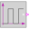
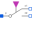
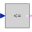

SwitchedCapacitorSwitched capacitor which can represent a positive or negative resistance |
Diagram
{kind=link}
Information
This information is part of the Modelica Standard Library maintained by the Modelica Association.
This model is a switched capacitor model without thermal behavior which can represent positive and negative resistances.
The clock source is inside the model, its frequency can be chosen by a parameter. Also the resistance is a parameter which can be positive and negative. The internal (switched) capacitor is parametrized in such a way that the total resistance is independently from the frequency equal to the resistance parameter.
Parameters (2)
| clock |
Value: Type: Time (s) Description: Clock |
|---|---|
| R |
Value: Type: Resistance (Ω) Description: Resistance |
Connectors (2)
| p |
Type: PositivePin |
|
|---|---|---|
| n |
Type: NegativePin |
Components (10)
|  | BooleanPulse |
Type: BooleanPulse |
|---|---|---|
| Capacitor |
Type: Capacitor |
|
|  | IdealCommutingSwitch1 |
Type: IdealCommutingSwitch |
| IdealCommutingSwitch2 |
Type: IdealCommutingSwitch |
|
| Ground1 |
Type: Ground |
|
| Ground2 |
Type: Ground |
|
|  | lessEqualThreshold |
Type: LessEqualThreshold |
| Resistance |
Type: RealExpression |
|
| not1 |
Type: Not |
|
| logicalSwitch |
Type: LogicalSwitch |
Used in Examples (1)
|
Modelica.Electrical.Analog.Examples
Cauer low-pass filter with operational amplifiers and switched capacitors |